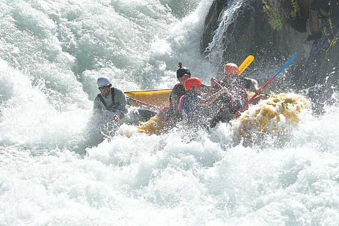
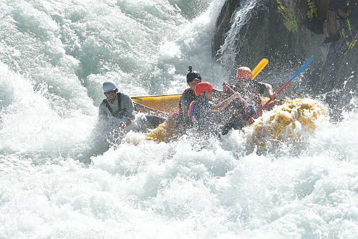

Dry Oar White Water Rafting is a company that exists to provide unforgettable whitewater rafting vacations for our guests. We are committed to providing the best possible experience for our guests through our exceptional service and our commitment to safety.
We aim to provide our guests with unforgettable memories that will last a lifetime. Our hope that we can assist patreons of all ages and families of all sizes experience these memories. Ultimately, our goal is to help our customers grow together and create unforgettable memories.
The best Whitewater Rafting in Colorado, White Water Rafting Company offers rafting on the Colorado and Roaring Fork Rivers in Glenwood Springs. Since 1974, we have been family owned and operated, rafting the Shoshone section of Glenwood Canyon and beyond.
Trips vary from mild and great for families, to trips exclusively for physically fit and experienced rafters. No matter what type of river adventures you are seeking, White Water Rafting Company can make it happen for you.